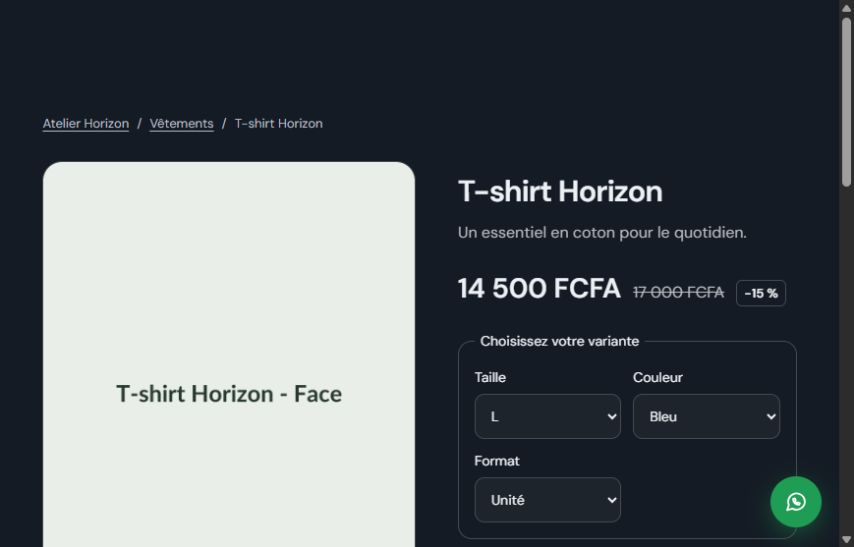
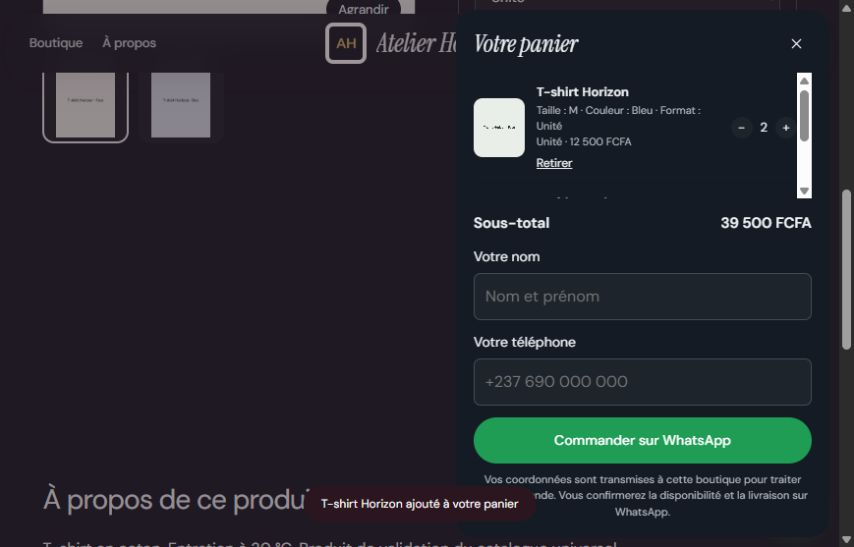
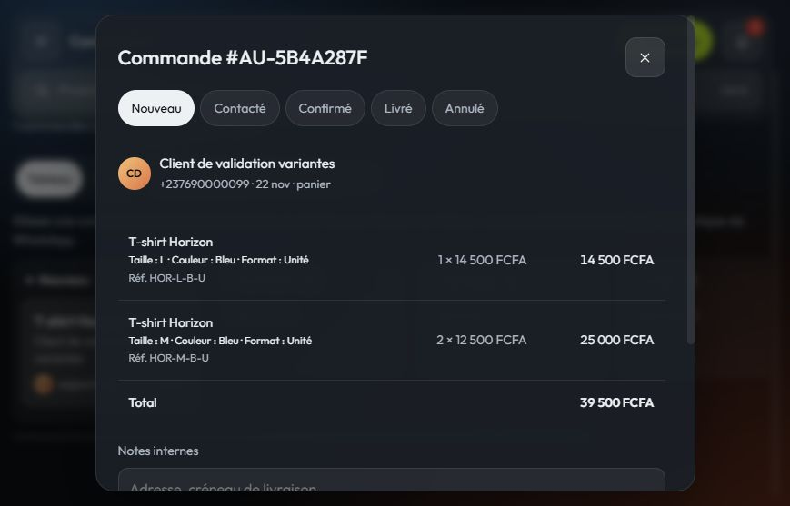
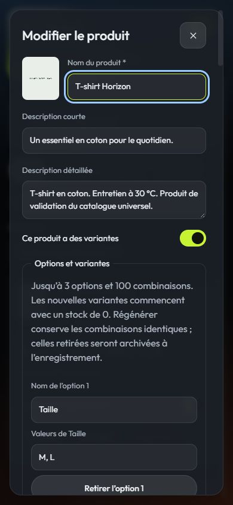
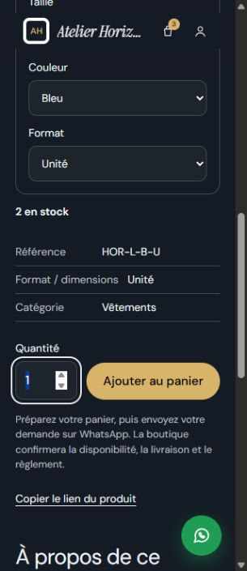
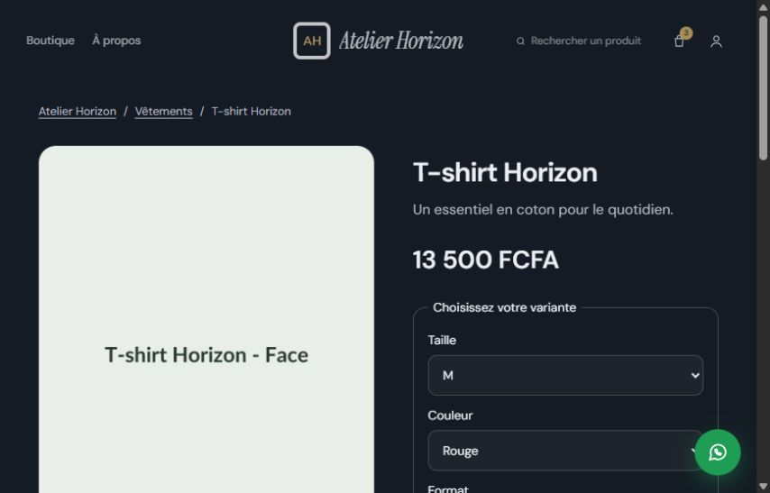
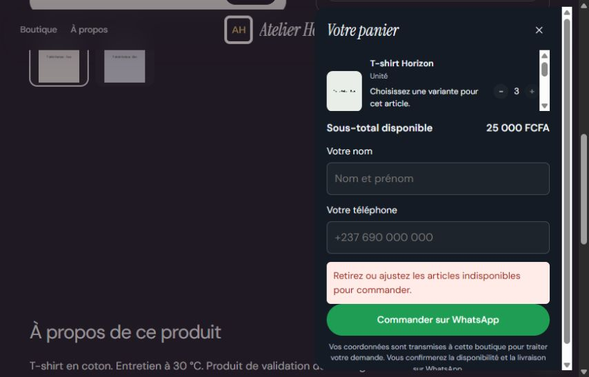

Validation locale du 22 novembre 2026 · Branche feature/variantes-produits-lot-3.
Le concept de demande WhatsApp reste inchangé : la commande ne réserve ni ne décrémente automatiquement le stock. Le vendeur confirme disponibilité, livraison et règlement. Aucun message WhatsApp n’a été envoyé pendant les tests.
Comparaison avant/après de tous les champs existants : boutique, identité visuelle, 8 produits simples, 4 catégories, 1 client, 1 commande et sa ligne conservés. Prix, stocks, identifiants et historique inchangés ; aucune variante ajoutée à Yanshop. Les autres tables et événements existants sont également conservés.
Résultat détaillé de conservation. Sauvegarde privée avant migration : .local/backups/variantes-lot3-2026-11-22/aurelia-avant-lot3.dump, exclue du dépôt.
| Contrôle | Résultat |
|---|---|
| Suite automatisée isolée | 54 tests réussis, aucun échec |
| Variantes sur PostgreSQL natif | 8 tests réussis |
| Régressions PostgreSQL natif | Catalogue : 9 ; personnalisation : 8 ; parcours SaaS : 17 — réussis |
| Compilation | Front et dashboard réussis |
| Migrations | 005 appliquée sur aurelia_db ; seconde exécution sans modification |
| Navigateur | Trois axes, huit variantes, sélection obligatoire, promotion, rupture, quantité supérieure au stock bloquée, panier séparé, lien copié et présélection vérifiés |
| Responsive | Fiche publique à 390 et 320 px sans débordement ; éditeur vendeur à 390 px sans débordement du dialogue |
| Commande test | 2 × 12 500 + 1 × 14 500 = 39 500 FCFA ; options et références visibles dans le dashboard |
Les tests couvrent aussi les accès inter-boutiques, les variantes étrangères à un produit, les combinaisons invalides, les transactions annulées, la stabilité des identifiants, les stocks agrégés par variante et les instantanés historiques après modification ou archivage.
La démonstration utilise la boutique de validation distincte Atelier Horizon et ses images de démonstration. Commande de validation et aperçu du message non envoyé.






